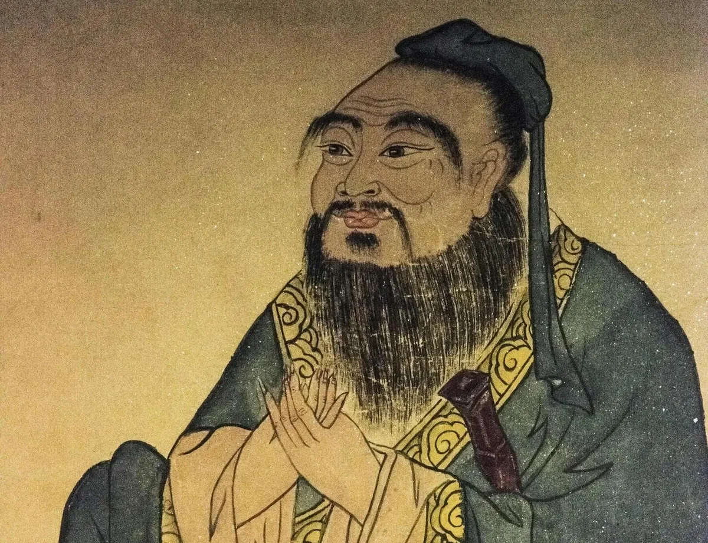
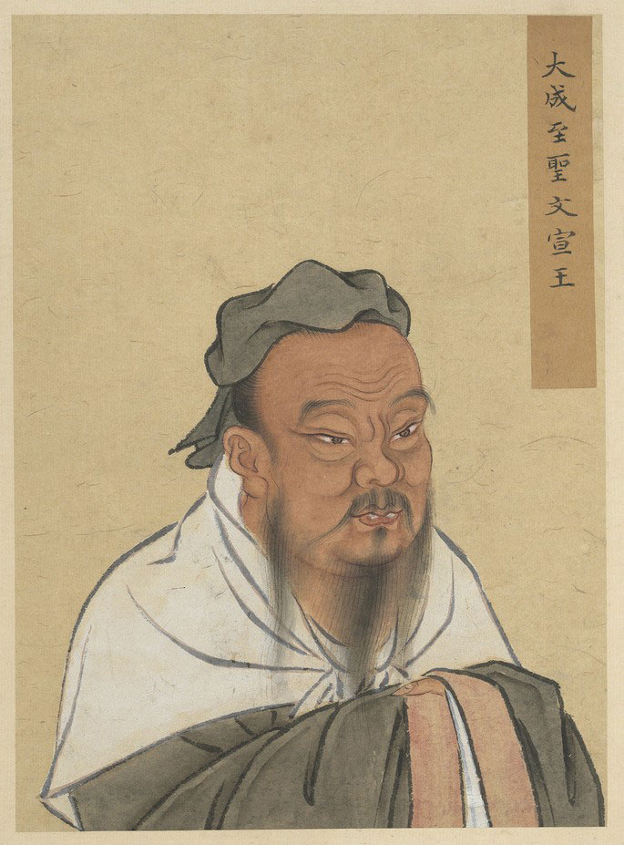
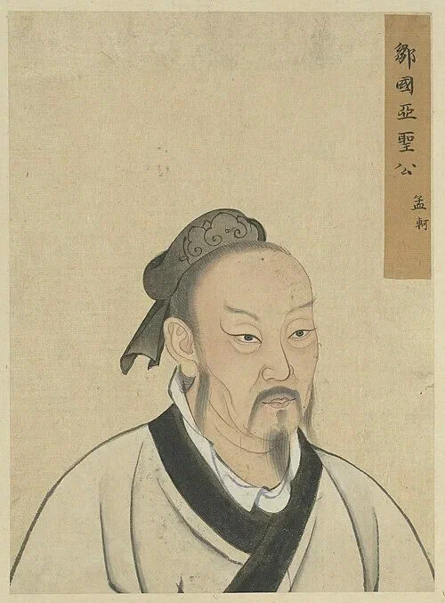
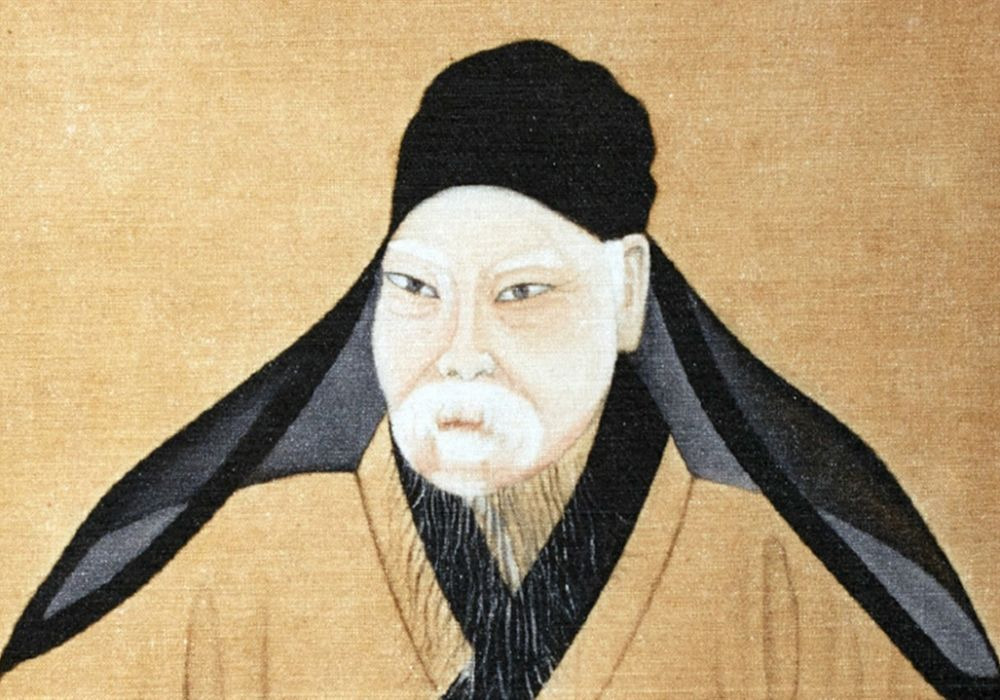
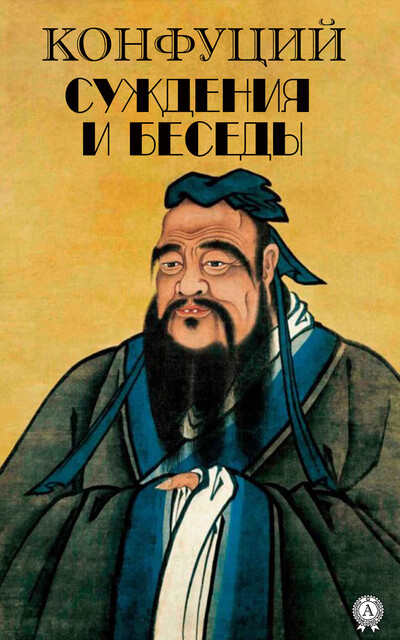
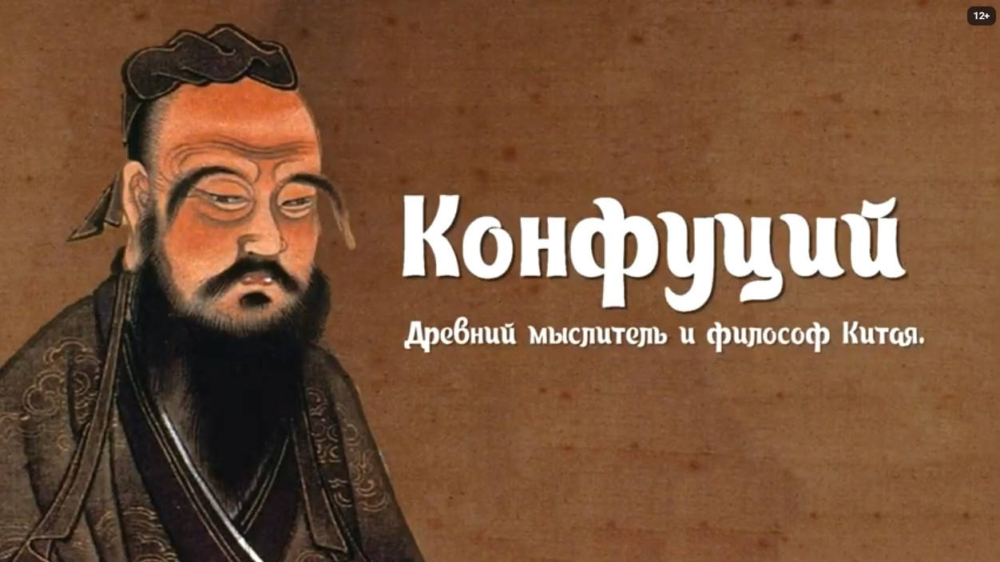

Конфуцианство
Гуманность, справедливость, ритуал, мудрость, доверие.
Даосизм
Дао следует природе, управление недеянием.
Буддизм
Сострадание, прозрение природы.
У-син — пять элементов
Наведи на элемент — увидишь его стихию!
🌳
Дерево
木 · Рост, весна
🔥
Огонь
火 · Тепло, лето
⛰️
Земля
土 · Центр, баланс
💧
Вода
水 · Зима, север
"Не делай другим того, чего не желаешь себе."
"Высшее благо подобно воде: она приносит пользу всем и не борется."
🏛️ Великие философы

Конфуций
551-479 гг. до н.э.
Основатель конфуцианства. Учение о морали и этике определило китайскую цивилизацию на 2500 лет.

Лао-цзы
VI в. до н.э.
Основоположник даосизма, автор «Дао Дэ Цзин». Учение о Дао и принципе недеяния (у-вэй).

Мэн-цзы
372-289 гг. до н.э.
Продолжатель Конфуция. Считал природу человека доброй, а зло — следствием воспитания.

Чжуан-цзы
369-286 гг. до н.э.
Великий даосский философ. Автор притчи о бабочке. Учил об относительности всего сущего.
📜 Хронология
VI в. до н.э.
Лао-цзы
Основоположник даосизма, автор «Дао Дэ Цзин».
V в. до н.э.
Конфуций
Основатель конфуцианства.
IV в. до н.э.
Мэн-цзы
Продолжатель дела Конфуция.
I в. н.э.
Буддизм
Школа Чань (дзен).

⚖️ Сравнение трёх учений
| Аспект | Конфуцианство | Даосизм | Буддизм |
|---|---|---|---|
| Цель | Социальная гармония | Единение с Дао | Просветление |
| Метод | Ритуалы, образование | Недеяние (у-вэй) | Медитация |
| Идеал | Благородный муж | Мудрец | Бодхисаттва |
🎬 Философия Китая

▶